vkki 1위부키 세이즈 EP.2 — 불 꺼(Turn off the light)
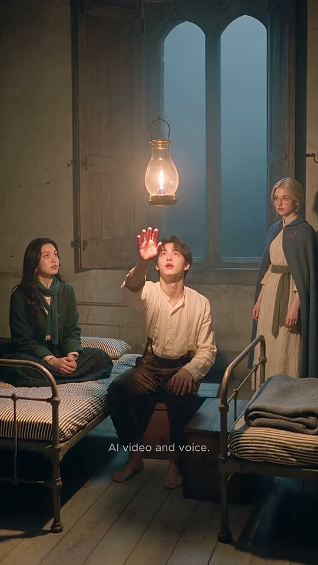
Buki Says — EP.2 : Turn Off the Light
조회수 1,867좋아요 32댓글 1업로드 2026-09-04길이 23.01초608x1080 · 24fps · 9:16 · AV1 324kb/s · AAC 44.1kHz 128kb/s · -17.8 LUFS (LRA 8.0)
말에 반응하는 마법 랜턴을 끄고 싶은 부키에게 누나가 'close the light'라는 틀린 표현을 알려주고, 안경 소녀가 창문을 닫아버리는 오해 개그 끝에 'turn off the light'를 배우는 23초 영어 미니드라마.
🔥 떡상 이유
- 무언 훅(0~2.8초 대사 없이 손을 랜턴에 뻗는 행동) — 소리 꺼놓고 스크롤하는 사람도 상황을 즉시 이해
- 틀린 표현의 시각화 개그 — 'close'를 말하자 창문이 닫힘. 오답이 왜 틀렸는지 말 대신 그림으로 설명(듀얼 코딩)
- 샷/리버스샷 핑퐁 리듬 — 평균 1.92초, 후반 0.83~1.38초로 가속해 긴장 상승
- 키워드 하이라이트 자막(노랑 #F8F848) — 핵심 단어만 색으로 튀어서 학습 포인트가 0.3초 안에 눈에 박힘
- 빈칸 퀴즈 자막('____ ____ the light') — 시청자가 속으로 답을 말하게 만드는 참여 장치 → 시청 지속·댓글 유도
- 보상 연출(정답 → 랜턴 소등, 방이 어두워짐) — 올바른 문장 = 세상이 바뀜이라는 게임형 피드백
- 반전 펀치라인 + 루프 — 오답을 준 누나가 'That's what I meant'로 공을 가로채고, 마지막이 어둠이라 첫 프레임(밝은 랜턴)으로 자연스럽게 반복 재생
hook0~2.8초: 대사 없이 랜턴에 손을 뻗는 주인공(무엇을 원하는지 행동으로) + 2.9초 첫 대사 'what do I say?'로 질문 던지기
conflict누나의 오답 'close the light' → 주인공이 그대로 외침 → 안경 소녀가 창문을 닫아버림(말 그대로 해석) → 'I want it dark'로 답답함 고조
payoff안경 소녀가 정답 'Turn off the light' 제시 → 부키 따라하기 → 빈칸 퀴즈 2회 → 랜턴 소등(시각적 보상)
loop누나의 뻔뻔한 '...That's what I meant'로 웃음 마무리 후 페이드 없이 하드 엔드. 어두운 끝 → 밝은 첫 프레임 대비로 재생 반복 시 이음새가 자연스러움
⏱ 편집 리듬
컷 수12평균 컷 길이1.92최단/최장0.83 / 3.76분당 컷31.3해석측정 컷 12개(마지막 컷 내부 20.96초 숨은 컷 포함 시 실제 13셋업). 도입 2.8/2.5초로 여유 있게 → 중반 1.2~2.3초 대화 핑퐁 → 퀴즈 구간 0.83/1.21초로 최고 속도 → 엔딩 3.76초로 호흡을 풀어줌(소등 정적). 대사는 컷 시작 후 0.1~0.3초에 시작하는 '스피커 온 컷' 규칙, 자막은 일부 다음 컷 초반까지 넘어가는 L컷형.
🎨 스타일 바이블
룩실사 시네마틱(AI 생성, Seedance 2.5 추정 — 설명란 #seedance25 #higgsfieldai). K-드라마 뷰티 조명, 매끈한 피부, 얕은 심도의 19세기 유럽 판타지 기숙 다락방조명메인 키: 천장에 매단 황동 허리케인 오일 랜턴의 2700K 호박색 빛(위·정면 우측). 필: 창밖 안개 낀 밤의 청록 블루(셔터 닫기 전). 셔터 닫힌 후 따뜻한 단색 앰버. 엔딩 소등 후 청록-다크(#1C2A2E 계열) 로우키색#E9D8B8 크림 리넨(부키 셔츠) · #2F4A3A 포레스트 그린(누나 코트) · #4E6878 슬레이트 블루(안경 소녀 망토) · #C8B89A 회벽 베이지 · #F5B862 랜턴 불빛 · #1C2A2E 소등 후 청록 어둠렌즈50mm 상당, f/2.0 전후 얕은 심도. 와이드는 28~35mm 상당(추정). OTS 컷은 전경 인물 흐림으로 깊이감세트거친 회벽+이끼 낀 돌벽의 다락 기숙방, 고딕 쌍아치 창과 낡은 나무 덧창, 체인에 매단 황동 허리케인 랜턴, 검은 연철 싱글 침대 3개(청회색 줄무늬 매트리스), 접힌 회색 담요, 낡은 나무 마루자막 스타일산세리프 Montserrat SemiBold 계열(추정), 흰색 #FFFFFF, 약 36px@1080(프레임 높이의 약 2.3% 캡하이트), 얇은 검정 외곽선+부드러운 그림자, 가로 중앙·세로 48~51%(인물 턱~목 높이), 한 줄. 키워드 노랑 #F8F848(오답·정답 모두 노랑). 빈칸은 노란 밑줄 '____ ____'. 등장 애니메이션 없음 — 대사 시작에 맞춰 팝 온/오프. 하단 세로 79% 위치에 'AI video and voice.' 작은 흰색(약 14px, 불투명도 70%) 상시 표기워터마크오버레이 로고 없음. 대신 안경 소녀 망토 오른쪽 가슴의 라일락색 'vkki' 자수가 월드 내 브랜드 워터마크(컷6·8·10에서 정면 노출). 하단 중앙 79% 'AI video and voice.' 고지 문구 상시
부키(Buki) — 주인공·학습자. 19세 전후 한국인 청년, 흐트러진 짙은 갈색 가르마 웨이브 머리, 흰 피부, 붉은 입술. 구김 있는 크림 리넨 차이나 칼라 셔츠, 짙은 갈색 울 바지, 맨발. 순진하고 답답해하는 표정
캐릭터 시트 프롬프트Character sheet, photoreal, full body front / 3-quarter / face close-up, Buki, a handsome Korean young man about 19 with tousled dark-brown wavy middle-part hair, fair skin, rosy lips, wearing a wrinkled cream-ivory linen band-collar peasant shirt and dark brown wool trousers, barefoot, soft warm lantern light, neutral plaster background, 9:16
동물 버전 캐릭터Character sheet, photoreal anthropomorphic animal, full body front / 3-quarter / face close-up, Hamjji, an anthropomorphic golden Syrian hamster (orange-gold and white fur, round cheeks, tiny pink paws) wearing a wrinkled cream-ivory linen band-collar peasant shirt and dark brown trousers, bare pink feet, big glossy black eyes, innocent slightly frustrated expression, neutral plaster background, 9:16
누나(Noona) — 트러블 메이커. 20대 초반 여성, 긴 검은 웨이브 가르마 머리, 작은 금색 후프 귀걸이, 포레스트 그린 울 코트(황동 단추), 청록 굵은 니트 목도리, 크림 하이넥 블라우스+브로치, 체크 스커트. 능글맞은 미소
캐릭터 시트 프롬프트Character sheet, photoreal, full body front / 3-quarter / face close-up, Noona, his older sister, early-20s East Asian woman with long wavy black center-part hair, small gold hoop earrings, forest-green wool coat with brass buttons, chunky teal-blue knit scarf, cream high-neck blouse with a small brooch, playful smug smile, neutral plaster background, 9:16
동물 버전 캐릭터Character sheet, photoreal anthropomorphic animal, full body front / 3-quarter / face close-up, Nabi-noona, an anthropomorphic long-haired black cat with amber eyes and small gold hoop earrings, wearing a forest-green wool coat with brass buttons and a chunky teal-blue knit scarf, smug half-closed eyes, neutral plaster background, 9:16
안경 소녀(이름 미상, 가칭 '안경 언니') — 정답 선생님 역. 백금발 로우 번 헤어, 둥근 금테 안경, 슬레이트 블루 후드 망토(황동 걸쇠, 오른쪽 가슴 라일락 'vkki' 자수), 크림 리넨 롱 드레스, 올리브 그린 천 허리띠. 무표정·윙크·검지 제스처
캐릭터 시트 프롬프트Character sheet, photoreal, full body front / 3-quarter / face close-up, the glasses girl, young European woman with platinum-blonde hair in a low messy bun and loose face-framing strands, round thin gold wire glasses, rosy cheeks, slate-blue wool hooded cape with a brass clasp and the word 'vkki' embroidered in lilac thread on the right chest, cream linen long dress with an olive-green fabric sash belt, calm deadpan expression, neutral plaster background, 9:16
동물 버전 캐릭터Character sheet, photoreal anthropomorphic animal, full body front / 3-quarter / face close-up, Momo, an anthropomorphic cream Ragdoll cat with blue eyes and a fluffy face wearing round thin gold wire glasses, a slate-blue wool hooded cape with a brass clasp and lilac 'vkki' embroidery on the right chest, cream linen dress with an olive-green sash, calm deadpan teacher expression, neutral plaster background, 9:16
🔊 오디오
목소리AI 보이스(설명란·화면 고지 'AI video and voice.'). 부키: 부드럽고 약간 높은 청년 톤, 망설임. 누나: 장난스럽고 자신감 있는 20대 여성. 안경 소녀: 차분·또박또박한 선생님 톤, 약간의 아이러니. 모두 미국식 영어, 짧은 문장, 느린 발화(학습용)BGM잔잔한 판타지/동화풍 어쿠스틱(뮤직박스·피치카토 현·부드러운 패드, 추정) 약 90 BPM(추정), 대사 아래 -30dB 전후로 깔림. 자동자막 [music] 태그 7.2초·14.0초 — 전환점에서 작은 음형 강조효과음0.00~2.83 랜턴 불꽃 미세음+룸톤(추정)
8.6~9.4 나무 덧창 닫히는 '탁'(추정)
19.8 랜턴 꺼지는 '훅' + 20.0~21.5 정적(RMS -27~-31dB)
21.0~21.8 이불 부스럭(추정)라우드니스-17.8TTS 팁각 대사 앞 0.1~0.2초 무음 패딩(컷 시작 후 발화). 'Noona— light... off?'는 단어 사이 0.3초 쉼으로 머뭇거림 표현. 'Close the light!'는 +2dB, 명령조. 'Close? The window is closed now.'는 'Close?' 뒤 0.4초 쉼 후 담담하게. 'Turn off the light'는 'Turn off'에 강세, 속도 0.9배. 마지막 '...That's what I meant'는 속삭이듯 -3dB, 앞 '...'에 0.3초 숨. 부키=soft male 19y, 누나=playful female 22y, 안경 소녀=calm clear female 20y (minimax-h3 보이스 프리셋 또는 pollo_clone_voice로 3개 고정)
BGM 생성 프롬프트Gentle whimsical fairytale underscore for a cozy candle-lit attic scene, music box melody with pizzicato strings and soft warm pad, light celesta accents, 90 BPM, quiet and playful, low dynamics under dialogue, small rising sting at 7 s and 14 s, fades to near silence at 20 s, instrumental, no vocals, 23 seconds
🎬 컷별 완전 분해 (12개)
컷 1 · 훅 — 상황 제시(불을 끄고 싶은데 방법을 모름)를 대사 없이 행동으로 2.8초 안에 보여줌
0.0s → 2.83s (2.83s)

랜턴
누나
부키
안경 소녀
샷WS앵글아이레벨(앉은 키 높이, 약간 로우 추정)카메라고정(미세 핸드헬드 흔들림 거의 없음)구도3인 가로 배치: 왼쪽 1/3 누나(침대 위 양반다리), 중앙 부키(가운데 침대 모서리에 앉음), 오른쪽 1/3 안경 소녀(창가에 서 있음). 랜턴이 화면 정중앙 상단 20~37%에 떠 있어 모든 시선이 위로 모임. 하단 25%는 바닥·침대 전경.동작부키가 오른손을 쫙 펴서 랜턴을 향해 '꺼져라' 하듯 들어 올림(마법 주문 제스처) → 반응 없자 손을 내리고 어리둥절하게 랜턴을 올려다봄. 누나는 부키를 흘끗 봄, 안경 소녀는 무표정 관찰.대사(대사 없음 — 잔잔한 BGM/앰비언스만, RMS -32~-40dB)화면 자막(자막 없음) 하단 'AI video and voice.' 고정 표기만들어오는 전환영상 시작(0프레임부터 풀 이미지, 페이드인 없음)효과음/음악잔잔한 판타지풍 BGM 인트로(추정), 랜턴 불꽃 미세한 쉬익 소리(추정)역할훅 — 상황 제시(불을 끄고 싶은데 방법을 모름)를 대사 없이 행동으로 2.8초 안에 보여줌
1순위
seedance-2-5원본 모델(추정) — 3인 와이드 동선·조명 유지
2순위
veo-3-1와이드 환경·조명 변화(랜턴 소등) 표현 강함
3순위
kling-v3고정 카메라 다인물 안정성
① 이미지 프롬프트 (원본 클론)photoreal cinematic live-action still, 9:16 vertical 608x1080, shot on 50mm full-frame, f/2.0 shallow depth of field, warm 2700K oil-lantern key light with soft falloff, cool teal-blue moonlight fill from window, subtle film grain, Korean drama beauty lighting, smooth dewy skin, 19th-century European attic dormitory of rough plaster and mossy stone walls. wide shot of a small candle-lit attic dormitory: rough beige plaster walls, a tall twin gothic-arched window with open weathered wooden shutters showing a foggy blue night, a brass hurricane oil lantern hanging from a chain in the upper center glowing warm, three old black wrought-iron single beds with blue-grey striped ticking mattresses, a folded grey wool blanket on the foreground right bed, worn pale wooden plank floor. Left: Noona, his older sister, early-20s East Asian woman with long wavy black center-part hair, small gold hoop earrings, forest-green wool coat with brass buttons, chunky teal-blue knit scarf, cream high-neck blouse with a small brooch, sitting cross-legged on the left bed looking at him. Center: Buki, a handsome Korean young man about 19 with tousled dark-brown wavy middle-part hair, fair skin, rosy lips, wearing a wrinkled cream-ivory linen band-collar peasant shirt and dark brown wool trousers, barefoot, sitting on the edge of the middle bed, right arm raised with open palm toward the lantern, looking up. Right: the glasses girl, young European woman with platinum-blonde hair in a low messy bun and loose face-framing strands, round thin gold wire glasses, rosy cheeks, slate-blue wool hooded cape with a brass clasp and the word 'vkki' embroidered in lilac thread on the right chest, cream linen long dress with an olive-green fabric sash belt, standing by the window, arms at her sides, calm. Static eye-level camera at seated height, all three small in frame, lantern as the brightest point.
② 영상 프롬프트 (원본 클론)Static camera, 2.8 seconds. The young man stretches his open palm toward the hanging oil lantern as if commanding it to go dark, holds for 1 second, nothing happens, he slowly lowers his hand to chest height, puzzled, still staring up. Sister glances at him, glasses girl stays still. Lantern flame flickers gently. No dialogue, soft ambient room tone and a gentle fantasy music bed.
③ 동물 버전 이미지 프롬프트photoreal cinematic still of anthropomorphic animal actors, soft realistic fur, expressive large eyes, 9:16 vertical 608x1080, 50mm full-frame f/2.0 shallow depth of field, warm 2700K oil-lantern key light, cool teal-blue moonlight fill, subtle film grain, 19th-century European attic dormitory of rough plaster and mossy stone walls, miniature-scale props matched to animal size. wide shot of a small candle-lit attic dormitory: rough beige plaster walls, a tall twin gothic-arched window with open weathered wooden shutters showing a foggy blue night, a brass hurricane oil lantern hanging from a chain in the upper center glowing warm, three old black wrought-iron beds scaled to small animals with blue-grey striped ticking mattresses, a folded grey wool blanket on the foreground right bed, worn pale wooden plank floor. Left: Nabi-noona, an anthropomorphic long-haired black cat with amber eyes and small gold hoop earrings, wearing a forest-green wool coat with brass buttons and a chunky teal-blue knit scarf, sitting on the left bed. Center: Hamjji, an anthropomorphic golden Syrian hamster (orange-gold and white fur, round cheeks, tiny pink paws) wearing a wrinkled cream-ivory linen band-collar peasant shirt and dark brown trousers, bare pink feet, sitting on the edge of the middle bed, raising one tiny open paw toward the lantern, looking up. Right: Momo, an anthropomorphic cream Ragdoll cat with blue eyes and a fluffy face wearing round thin gold wire glasses, a slate-blue wool hooded cape with a brass clasp and lilac 'vkki' embroidery on the right chest, cream linen dress with an olive-green sash, standing by the window. Same composition and lighting as the live-action frame.
④ 동물 버전 영상 프롬프트Static camera, 2.8 seconds. The hamster stretches his tiny paw toward the lantern like casting a spell, whiskers twitching, nothing happens, he lowers the paw and tilts his head in confusion. Black cat glances at him, ragdoll cat stays still with a slow blink. No dialogue, soft ambient tone.
네거티브random text, subtitles, captions, letters on screen, watermark overlay, logo overlay, extra fingers, fused fingers, deformed hands, warped face, asymmetrical eyes, cross-eyed, lip-sync drift, mouth moving without audio, flicker, morphing background, identity change between frames, duplicate characters, cartoon, anime, 3D render look, plastic skin, oversaturated, horizontal 16:9 frame, letterbox, modern objects, electric lamp, light bulb, smartphone, daylight, harsh flash | ANIMAL: human characters, human faces, human hands, realistic human skin, random text, subtitles, captions, letters on screen, watermark overlay, logo overlay, extra fingers, fused fingers, deformed hands, warped face, asymmetrical eyes, cross-eyed, lip-sync drift, mouth moving without audio, flicker, morphing background, identity change between frames, duplicate characters, cartoon, anime, 3D render look, plastic skin, oversaturated, horizontal 16:9 frame, letterbox, modern objects, electric lamp, light bulb, smartphone, daylight, harsh flash, creepy uncanny animal, distorted snout, extra limbs, extra tails, mismatched fur color between shots
컷 2 · 갈등 제시 — 단어는 알지만 문장을 모름(학습 포인트 질문 던지기)
2.83s → 5.38s (2.54s)
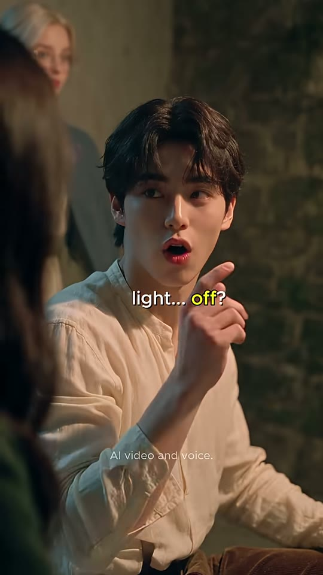
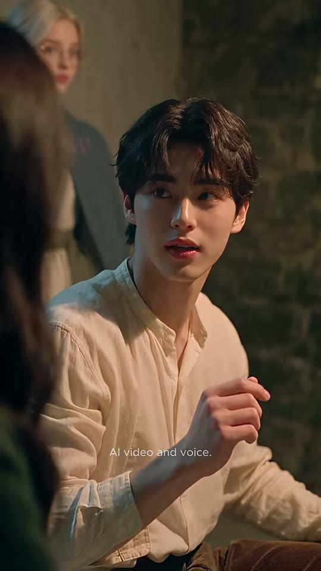
부키
누나(전경 흐림)
안경 소녀(배경 흐림)
샷MCU앵글아이레벨, 누나 어깨 너머 OTS카메라고정 + 아주 느린 푸시인(추정)구도부키가 중앙~우측(얼굴 x30~75%, y17~45%). 좌측 끝 전경에 누나 머리카락 흐림(OTS 프레임), 좌상단 배경에 흐린 안경 소녀가 서 있음. 배경은 이끼 낀 돌벽. 시선은 화면 왼쪽(누나).동작눈 감고 한숨 → 눈 뜨며 누나를 보고 애원하는 표정, 오른손 검지를 세웠다가 느슨한 주먹으로 가볍게 흔듦('어떻게 말해?').대사부키: "Noona— light... off? ...What do I say?" (자동자막: 'Do not light off. What do I say?')화면 자막"Noona —" (2.90~3.40) → "light... off?" 중 'off?' 노랑 #F8F848 (3.40~4.40) → "... what do I say?" 하이라이트 없음 (4.40~5.38). 위치 화면 세로 49~51% 중앙들어오는 전환하드컷 — 와이드→MCU 점프로 대사 시작(컷 후 0.13초에 발화). 스피커 온 컷효과음/음악대사 시작과 함께 BGM 살짝 뒤로(덕킹)역할갈등 제시 — 단어는 알지만 문장을 모름(학습 포인트 질문 던지기)
1순위
minimax-h3대사 립싱크+음성 동시 생성, 무료 팀 기본
2순위
seedance-2-5원본 해시태그 #seedance25 — 동일 룩·피부 질감 재현에 가장 가까움(추정)
3순위
kling-v3-omni레퍼런스 이미지 고정력 좋은 립싱크 대안
① 이미지 프롬프트 (원본 클론)photoreal cinematic live-action still, 9:16 vertical 608x1080, shot on 50mm full-frame, f/2.0 shallow depth of field, warm 2700K oil-lantern key light with soft falloff, cool teal-blue moonlight fill from window, subtle film grain, Korean drama beauty lighting, smooth dewy skin, 19th-century European attic dormitory of rough plaster and mossy stone walls. Medium close-up over-the-shoulder: Buki, a handsome Korean young man about 19 with tousled dark-brown wavy middle-part hair, fair skin, rosy lips, wearing a wrinkled cream-ivory linen band-collar peasant shirt and dark brown wool trousers, barefoot, framed center-right from mid-chest up, looking screen-left toward his sister with a pleading worried face, right hand raised at chest with index finger up. Soft-focus foreground on the left edge: the sister's dark hair and green coat shoulder. Blurred background upper-left: the blonde glasses girl in slate-blue cape standing against a mossy stone wall. Warm lantern light from above-front.
② 영상 프롬프트 (원본 클론)Static camera with a very slow push-in, 2.5 seconds. He exhales with eyes closed, then opens them and looks at his sister, gesturing with his index finger then a loose fist. Lip-sync, soft pleading young male voice, slight hesitation: "Noona... light... off? ...What do I say?"
③ 동물 버전 이미지 프롬프트photoreal cinematic still of anthropomorphic animal actors, soft realistic fur, expressive large eyes, 9:16 vertical 608x1080, 50mm full-frame f/2.0 shallow depth of field, warm 2700K oil-lantern key light, cool teal-blue moonlight fill, subtle film grain, 19th-century European attic dormitory of rough plaster and mossy stone walls, miniature-scale props matched to animal size. Medium close-up over-the-shoulder: Hamjji, an anthropomorphic golden Syrian hamster (orange-gold and white fur, round cheeks, tiny pink paws) wearing a wrinkled cream-ivory linen band-collar peasant shirt and dark brown trousers, bare pink feet, framed center-right from mid-chest up, looking screen-left with a pleading worried face, one tiny paw raised with a finger-claw up. Soft-focus foreground left edge: black cat fur and green coat shoulder. Blurred background: the cream ragdoll cat in slate-blue cape against a mossy stone wall.
④ 동물 버전 영상 프롬프트Static camera, slow push-in, 2.5 seconds. The hamster sighs with eyes closed, cheeks puff, then opens big eyes and gestures with a tiny paw. Mouth lip-synced, cute young male voice: "Noona... light... off? ...What do I say?"
네거티브random text, subtitles, captions, letters on screen, watermark overlay, logo overlay, extra fingers, fused fingers, deformed hands, warped face, asymmetrical eyes, cross-eyed, lip-sync drift, mouth moving without audio, flicker, morphing background, identity change between frames, duplicate characters, cartoon, anime, 3D render look, plastic skin, oversaturated, horizontal 16:9 frame, letterbox, modern objects, electric lamp, light bulb, smartphone, daylight, harsh flash | ANIMAL: human characters, human faces, human hands, realistic human skin, random text, subtitles, captions, letters on screen, watermark overlay, logo overlay, extra fingers, fused fingers, deformed hands, warped face, asymmetrical eyes, cross-eyed, lip-sync drift, mouth moving without audio, flicker, morphing background, identity change between frames, duplicate characters, cartoon, anime, 3D render look, plastic skin, oversaturated, horizontal 16:9 frame, letterbox, modern objects, electric lamp, light bulb, smartphone, daylight, harsh flash, creepy uncanny animal, distorted snout, extra limbs, extra tails, mismatched fur color between shots
컷 3 · 트러블 메이커 — 틀린 단어(close)를 심어 갈등 유발
5.38s → 6.96s (1.58s)
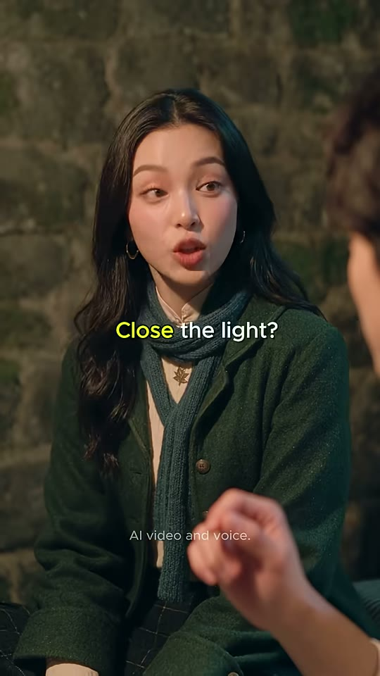
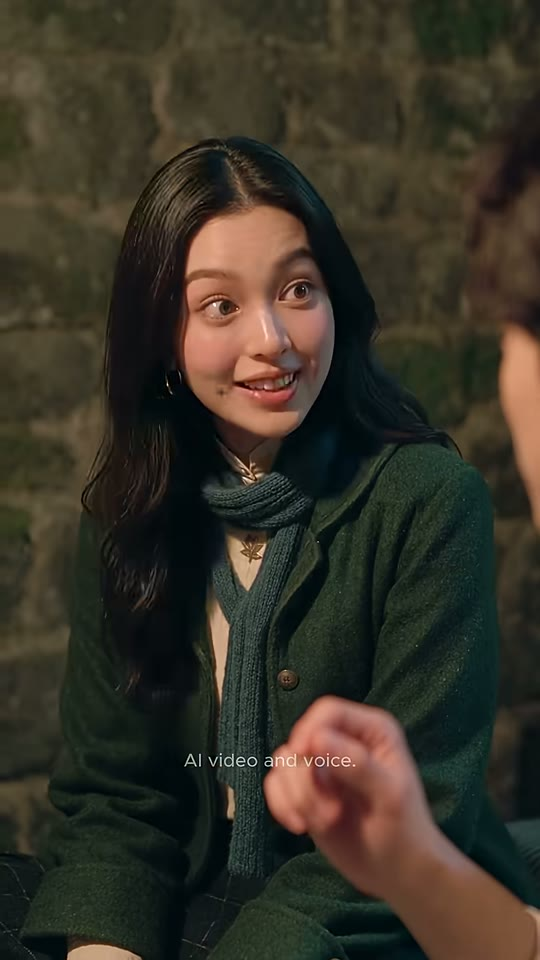
누나
부키 손(전경 흐림)
부키 머리(전경 흐림)
샷MCU앵글아이레벨, 부키 어깨 너머 역 OTS카메라고정구도누나가 좌~중앙(얼굴 x30~62%, y17~45%), 시선 화면 오른쪽(부키). 우측 끝 전경에 부키 머리 흐림, 하단 중앙에 부키의 흐린 손(x50~80%, y72~95%). 배경 이끼 낀 돌벽.동작'흠…' 하고 한쪽 입꼬리 올린 채 생각하는 척 → 장난스럽게 눈썹 올리며 틀린 표현을 제안, 끝에 능글맞은 미소.대사누나: "Mhm... close the light?" (틀린 표현을 일부러 알려줌)화면 자막"Hmm..." (5.40~5.90) → "Close the light?" 중 'Close' 노랑 (5.90~6.96)들어오는 전환하드컷 — 샷/리버스샷(OTS 역방향)효과음/음악없음(대사만)역할트러블 메이커 — 틀린 단어(close)를 심어 갈등 유발
1순위
seedance-2-5원본 모델(추정) — 미세표정·윙크·손짓 자연스러움
2순위
minimax-h3무료·오디오 포함 립싱크
3순위
kling-v3-omni캐릭터 일관성 + 립싱크
① 이미지 프롬프트 (원본 클론)photoreal cinematic live-action still, 9:16 vertical 608x1080, shot on 50mm full-frame, f/2.0 shallow depth of field, warm 2700K oil-lantern key light with soft falloff, cool teal-blue moonlight fill from window, subtle film grain, Korean drama beauty lighting, smooth dewy skin, 19th-century European attic dormitory of rough plaster and mossy stone walls. Reverse over-the-shoulder medium close-up: Noona, his older sister, early-20s East Asian woman with long wavy black center-part hair, small gold hoop earrings, forest-green wool coat with brass buttons, chunky teal-blue knit scarf, cream high-neck blouse with a small brooch, framed center-left from chest up, looking screen-right at her brother with a smug, teasing half-smile and one raised eyebrow. Soft-focus foreground: his dark hair on the right edge and his blurred hand at bottom center. Background: dark mossy stone wall lit warm from the lantern.
② 영상 프롬프트 (원본 클론)Static camera, 1.6 seconds. She hums thoughtfully, then raises her brows and suggests with a sly grin. Lip-sync, playful confident young female voice: "Mhm... close the light?" End on a cheeky smile.
③ 동물 버전 이미지 프롬프트photoreal cinematic still of anthropomorphic animal actors, soft realistic fur, expressive large eyes, 9:16 vertical 608x1080, 50mm full-frame f/2.0 shallow depth of field, warm 2700K oil-lantern key light, cool teal-blue moonlight fill, subtle film grain, 19th-century European attic dormitory of rough plaster and mossy stone walls, miniature-scale props matched to animal size. Reverse over-the-shoulder medium close-up: Nabi-noona, an anthropomorphic long-haired black cat with amber eyes and small gold hoop earrings, wearing a forest-green wool coat with brass buttons and a chunky teal-blue knit scarf, framed center-left from chest up, looking screen-right with a smug teasing expression, one ear tilted. Soft-focus foreground: golden hamster fur on the right edge and a tiny blurred paw at bottom center. Mossy stone wall background.
④ 동물 버전 영상 프롬프트Static camera, 1.6 seconds. The black cat hums with half-closed eyes, whiskers forward, then says with a sly grin, lip-synced, playful female voice: "Mhm... close the light?" Ends with a smug slow blink.
네거티브random text, subtitles, captions, letters on screen, watermark overlay, logo overlay, extra fingers, fused fingers, deformed hands, warped face, asymmetrical eyes, cross-eyed, lip-sync drift, mouth moving without audio, flicker, morphing background, identity change between frames, duplicate characters, cartoon, anime, 3D render look, plastic skin, oversaturated, horizontal 16:9 frame, letterbox, modern objects, electric lamp, light bulb, smartphone, daylight, harsh flash | ANIMAL: human characters, human faces, human hands, realistic human skin, random text, subtitles, captions, letters on screen, watermark overlay, logo overlay, extra fingers, fused fingers, deformed hands, warped face, asymmetrical eyes, cross-eyed, lip-sync drift, mouth moving without audio, flicker, morphing background, identity change between frames, duplicate characters, cartoon, anime, 3D render look, plastic skin, oversaturated, horizontal 16:9 frame, letterbox, modern objects, electric lamp, light bulb, smartphone, daylight, harsh flash, creepy uncanny animal, distorted snout, extra limbs, extra tails, mismatched fur color between shots
컷 4 · 틀린 표현 실행(시청자는 '안 될 텐데' 예측)
6.96s → 8.17s (1.21s)

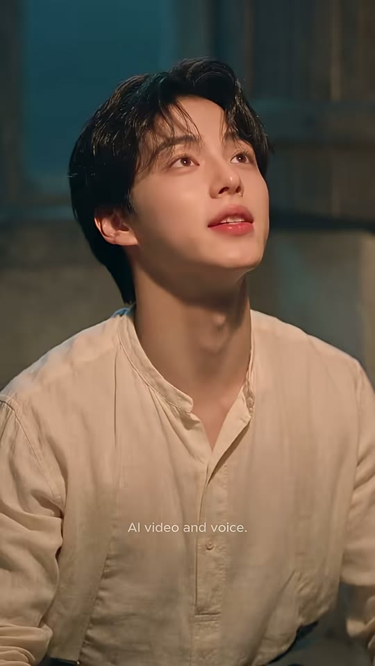
부키
부키 손(전경)
샷MCU앵글살짝 로우앵글(턱 들고 위를 봄)카메라고정구도부키 얼굴 중앙(x32~80%, y12~45%), 시선 위쪽 프레임 밖(랜턴). 배경은 푸른 밤빛 창문 셔터 — 컷2보다 차가운 톤. 좌하단 전경에 흐린 오른손.동작눈을 굴려 위를 보고 턱을 들어 랜턴을 향해 확신 있게 명령. 입을 크게 벌려 'Close'.대사부키: "Close the light!"화면 자막"Close the light!" 중 'Close' 노랑 (7.20~8.17)들어오는 전환하드컷 — 리액션→실행효과음/음악BGM 작은 상승(추정, 7.5초 RMS -16dB 피크)역할틀린 표현 실행(시청자는 '안 될 텐데' 예측)
1순위
minimax-h3대사 립싱크+음성 동시 생성, 무료 팀 기본
2순위
seedance-2-5원본 해시태그 #seedance25 — 동일 룩·피부 질감 재현에 가장 가까움(추정)
3순위
kling-v3-omni레퍼런스 이미지 고정력 좋은 립싱크 대안
① 이미지 프롬프트 (원본 클론)photoreal cinematic live-action still, 9:16 vertical 608x1080, shot on 50mm full-frame, f/2.0 shallow depth of field, warm 2700K oil-lantern key light with soft falloff, cool teal-blue moonlight fill from window, subtle film grain, Korean drama beauty lighting, smooth dewy skin, 19th-century European attic dormitory of rough plaster and mossy stone walls. Medium close-up, slightly low angle: Buki, a handsome Korean young man about 19 with tousled dark-brown wavy middle-part hair, fair skin, rosy lips, wearing a wrinkled cream-ivory linen band-collar peasant shirt and dark brown wool trousers, barefoot, chin raised, looking up past the top of frame at the lantern with determined eyes. Background: out-of-focus teal-blue moonlit window and closed wooden shutter panels, cooler color than the previous shot. Blurred right hand in lower-left foreground.
② 영상 프롬프트 (원본 클론)Static camera, 1.2 seconds. He rolls his eyes upward and lifts his chin, then commands loudly toward the ceiling. Lip-sync, confident young male voice: "Close the light!"
③ 동물 버전 이미지 프롬프트photoreal cinematic still of anthropomorphic animal actors, soft realistic fur, expressive large eyes, 9:16 vertical 608x1080, 50mm full-frame f/2.0 shallow depth of field, warm 2700K oil-lantern key light, cool teal-blue moonlight fill, subtle film grain, 19th-century European attic dormitory of rough plaster and mossy stone walls, miniature-scale props matched to animal size. Medium close-up, slightly low angle: Hamjji, an anthropomorphic golden Syrian hamster (orange-gold and white fur, round cheeks, tiny pink paws) wearing a wrinkled cream-ivory linen band-collar peasant shirt and dark brown trousers, bare pink feet, chin raised, looking up past the top of frame with determined shiny eyes. Background: out-of-focus teal-blue moonlit window shutters.
④ 동물 버전 영상 프롬프트Static camera, 1.2 seconds. The hamster lifts his chin and cheeks, whiskers stiff, and shouts up at the ceiling, lip-synced: "Close the light!"
네거티브random text, subtitles, captions, letters on screen, watermark overlay, logo overlay, extra fingers, fused fingers, deformed hands, warped face, asymmetrical eyes, cross-eyed, lip-sync drift, mouth moving without audio, flicker, morphing background, identity change between frames, duplicate characters, cartoon, anime, 3D render look, plastic skin, oversaturated, horizontal 16:9 frame, letterbox, modern objects, electric lamp, light bulb, smartphone, daylight, harsh flash | ANIMAL: human characters, human faces, human hands, realistic human skin, random text, subtitles, captions, letters on screen, watermark overlay, logo overlay, extra fingers, fused fingers, deformed hands, warped face, asymmetrical eyes, cross-eyed, lip-sync drift, mouth moving without audio, flicker, morphing background, identity change between frames, duplicate characters, cartoon, anime, 3D render look, plastic skin, oversaturated, horizontal 16:9 frame, letterbox, modern objects, electric lamp, light bulb, smartphone, daylight, harsh flash, creepy uncanny animal, distorted snout, extra limbs, extra tails, mismatched fur color between shots
컷 5 · 개그 셋업 — 'close'가 창문에 적용되는 오해를 행동으로 보여줌
8.17s → 9.96s (1.79s)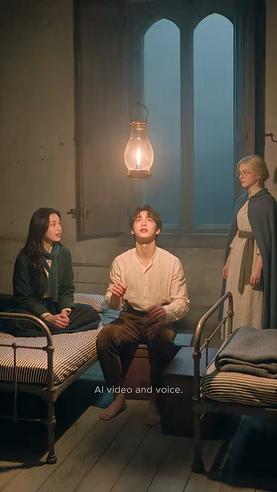

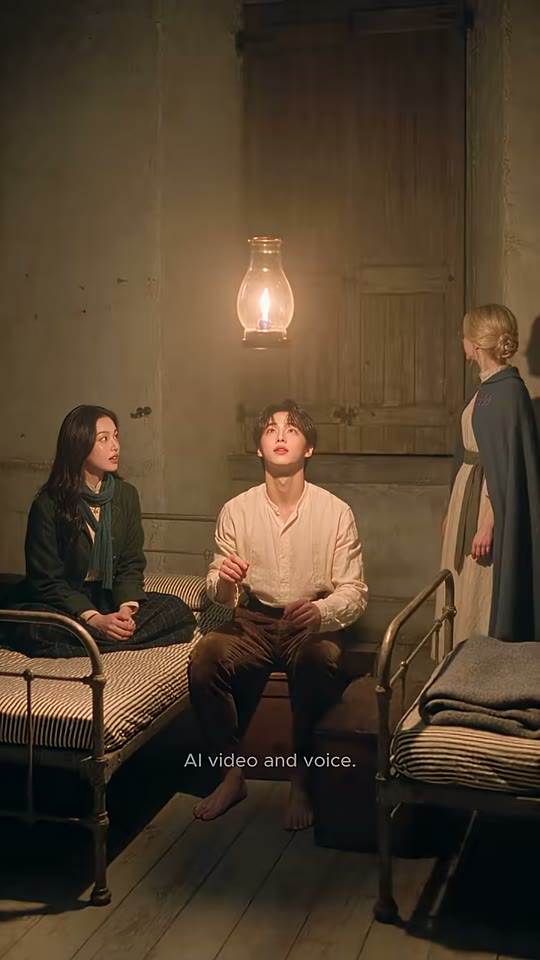
랜턴
누나
부키
안경 소녀
샷WS앵글아이레벨(컷1과 동일 셋업)카메라고정구도컷1과 같은 3인 와이드. 랜턴은 여전히 켜져 있음. 오른쪽 안경 소녀가 몸을 돌려 창문 나무 셔터를 닫음 → 창의 푸른빛이 사라지고 방 전체가 따뜻한 호박색으로 바뀜.동작부키·누나는 랜턴을 올려다보며 기다림(불은 안 꺼짐). 안경 소녀가 'close'를 말 그대로 받아들여 창문 셔터를 '닫음' — 시각적 말장난.대사(대사 없음)화면 자막(자막 없음)들어오는 전환하드컷 — 매치 와이드로 복귀(결과 확인)효과음/음악나무 덧창 닫히는 '탁' 소리(추정)역할개그 셋업 — 'close'가 창문에 적용되는 오해를 행동으로 보여줌
1순위
seedance-2-5원본 모델(추정) — 3인 와이드 동선·조명 유지
2순위
veo-3-1와이드 환경·조명 변화(랜턴 소등) 표현 강함
3순위
kling-v3고정 카메라 다인물 안정성
① 이미지 프롬프트 (원본 클론)photoreal cinematic live-action still, 9:16 vertical 608x1080, shot on 50mm full-frame, f/2.0 shallow depth of field, warm 2700K oil-lantern key light with soft falloff, cool teal-blue moonlight fill from window, subtle film grain, Korean drama beauty lighting, smooth dewy skin, 19th-century European attic dormitory of rough plaster and mossy stone walls. Same wide setup as the opening: wide shot of a small candle-lit attic dormitory: rough beige plaster walls, a tall twin gothic-arched window with open weathered wooden shutters showing a foggy blue night, a brass hurricane oil lantern hanging from a chain in the upper center glowing warm, three old black wrought-iron single beds with blue-grey striped ticking mattresses, a folded grey wool blanket on the foreground right bed, worn pale wooden plank floor. The lantern is still burning. Sister on the left bed and the young man on the middle bed both staring up at the lantern. The blonde glasses girl on the right has turned toward the window, hands on the wooden shutters, closing them.
② 영상 프롬프트 (원본 클론)Static camera, 1.8 seconds. The lantern stays lit. The girl at the window turns and swings both wooden shutters closed; the cool blue window light disappears and the room becomes warmer and darker amber. Brother and sister keep looking up, waiting. Wooden shutter clack sound. No dialogue.
③ 동물 버전 이미지 프롬프트photoreal cinematic still of anthropomorphic animal actors, soft realistic fur, expressive large eyes, 9:16 vertical 608x1080, 50mm full-frame f/2.0 shallow depth of field, warm 2700K oil-lantern key light, cool teal-blue moonlight fill, subtle film grain, 19th-century European attic dormitory of rough plaster and mossy stone walls, miniature-scale props matched to animal size. Same wide setup: wide shot of a small candle-lit attic dormitory: rough beige plaster walls, a tall twin gothic-arched window with open weathered wooden shutters showing a foggy blue night, a brass hurricane oil lantern hanging from a chain in the upper center glowing warm, three old black wrought-iron beds scaled to small animals with blue-grey striped ticking mattresses, a folded grey wool blanket on the foreground right bed, worn pale wooden plank floor. Lantern still burning. Nabi-noona, an anthropomorphic long-haired black cat with amber eyes and small gold hoop earrings, wearing a forest-green wool coat with brass buttons and a chunky teal-blue knit scarf on the left bed and Hamjji, an anthropomorphic golden Syrian hamster (orange-gold and white fur, round cheeks, tiny pink paws) wearing a wrinkled cream-ivory linen band-collar peasant shirt and dark brown trousers, bare pink feet on the middle bed staring up. Momo, an anthropomorphic cream Ragdoll cat with blue eyes and a fluffy face wearing round thin gold wire glasses, a slate-blue wool hooded cape with a brass clasp and lilac 'vkki' embroidery on the right chest, cream linen dress with an olive-green sash on the right standing on tiptoe pushing the wooden shutters closed with both paws.
④ 동물 버전 영상 프롬프트Static camera, 1.8 seconds. The lantern stays lit. The ragdoll cat pushes the shutters closed with her paws, the blue light vanishes, room turns amber. Hamster and black cat keep staring up. Shutter clack sound. No dialogue.
네거티브random text, subtitles, captions, letters on screen, watermark overlay, logo overlay, extra fingers, fused fingers, deformed hands, warped face, asymmetrical eyes, cross-eyed, lip-sync drift, mouth moving without audio, flicker, morphing background, identity change between frames, duplicate characters, cartoon, anime, 3D render look, plastic skin, oversaturated, horizontal 16:9 frame, letterbox, modern objects, electric lamp, light bulb, smartphone, daylight, harsh flash | ANIMAL: human characters, human faces, human hands, realistic human skin, random text, subtitles, captions, letters on screen, watermark overlay, logo overlay, extra fingers, fused fingers, deformed hands, warped face, asymmetrical eyes, cross-eyed, lip-sync drift, mouth moving without audio, flicker, morphing background, identity change between frames, duplicate characters, cartoon, anime, 3D render look, plastic skin, oversaturated, horizontal 16:9 frame, letterbox, modern objects, electric lamp, light bulb, smartphone, daylight, harsh flash, creepy uncanny animal, distorted snout, extra limbs, extra tails, mismatched fur color between shots
컷 6 · 펀치라인 1 — 'close'는 창문/문에 쓰는 말임을 개그로 설명
9.96s → 12.21s (2.25s)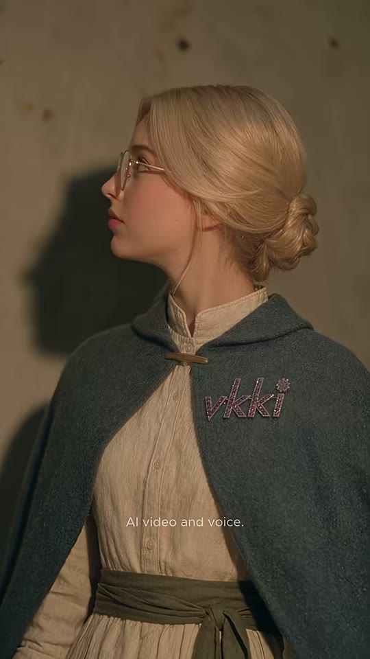

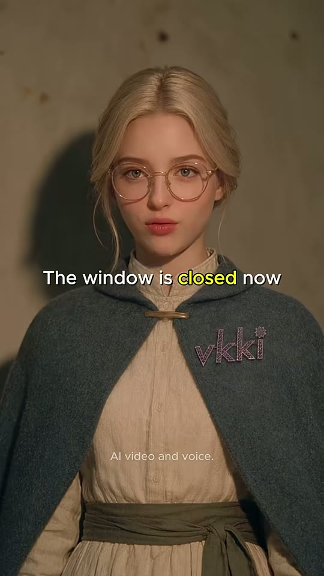
안경 소녀
vkki 자수
샷MCU앵글정면 아이레벨카메라고정구도안경 소녀 정중앙(얼굴 x35~68%, y15~42%), 좌측 벽에 본인의 짙은 그림자(키라이트 우측 전방). 망토 오른쪽 가슴 'vkki' 라일락색 자수(x55~80%, y42~50%)가 채널 워터마크 역할. 평평한 회백색 회벽 배경.동작옆모습(창문 쪽)으로 시작 → 천천히 정면으로 돌아 카메라를 보고 한쪽 눈 윙크 → 무표정하게 '창문 닫았는데?'.대사안경 소녀: "Close? The window is closed now."화면 자막"Close?" 전체 노랑 (10.00~10.95) → "The window is closed now" 중 'closed' 노랑 (10.95~12.35, 다음 컷 초반까지 자막이 넘어감)들어오는 전환하드컷 — 셔터 닫은 인물의 정면 리액션효과음/음악없음역할펀치라인 1 — 'close'는 창문/문에 쓰는 말임을 개그로 설명
1순위
seedance-2-5원본 모델(추정) — 미세표정·윙크·손짓 자연스러움
2순위
minimax-h3무료·오디오 포함 립싱크
3순위
kling-v3-omni캐릭터 일관성 + 립싱크
① 이미지 프롬프트 (원본 클론)photoreal cinematic live-action still, 9:16 vertical 608x1080, shot on 50mm full-frame, f/2.0 shallow depth of field, warm 2700K oil-lantern key light with soft falloff, cool teal-blue moonlight fill from window, subtle film grain, Korean drama beauty lighting, smooth dewy skin, 19th-century European attic dormitory of rough plaster and mossy stone walls. Frontal medium close-up against a flat grey-beige plaster wall: the glasses girl, young European woman with platinum-blonde hair in a low messy bun and loose face-framing strands, round thin gold wire glasses, rosy cheeks, slate-blue wool hooded cape with a brass clasp and the word 'vkki' embroidered in lilac thread on the right chest, cream linen long dress with an olive-green fabric sash belt. Her head is turned in profile toward screen-left (toward the closed window), a crisp shadow of her silhouette on the wall to the left. Warm lantern key from front-right, calm deadpan face.
② 영상 프롬프트 (원본 클론)Static camera, 2.3 seconds. She slowly turns from profile to face the camera, gives a quick one-eye wink, then says deadpan with a slight head tilt. Lip-sync, calm clear young female voice with gentle irony: "Close? The window is closed now."
③ 동물 버전 이미지 프롬프트photoreal cinematic still of anthropomorphic animal actors, soft realistic fur, expressive large eyes, 9:16 vertical 608x1080, 50mm full-frame f/2.0 shallow depth of field, warm 2700K oil-lantern key light, cool teal-blue moonlight fill, subtle film grain, 19th-century European attic dormitory of rough plaster and mossy stone walls, miniature-scale props matched to animal size. Frontal medium close-up against a flat grey-beige plaster wall: Momo, an anthropomorphic cream Ragdoll cat with blue eyes and a fluffy face wearing round thin gold wire glasses, a slate-blue wool hooded cape with a brass clasp and lilac 'vkki' embroidery on the right chest, cream linen dress with an olive-green sash, head turned in profile toward screen-left, crisp shadow on the wall, deadpan.
④ 동물 버전 영상 프롬프트Static camera, 2.3 seconds. The ragdoll cat turns from profile to camera, winks one blue eye behind her round glasses, then says deadpan, lip-synced: "Close? The window is closed now."
네거티브random text, subtitles, captions, letters on screen, watermark overlay, logo overlay, extra fingers, fused fingers, deformed hands, warped face, asymmetrical eyes, cross-eyed, lip-sync drift, mouth moving without audio, flicker, morphing background, identity change between frames, duplicate characters, cartoon, anime, 3D render look, plastic skin, oversaturated, horizontal 16:9 frame, letterbox, modern objects, electric lamp, light bulb, smartphone, daylight, harsh flash | ANIMAL: human characters, human faces, human hands, realistic human skin, random text, subtitles, captions, letters on screen, watermark overlay, logo overlay, extra fingers, fused fingers, deformed hands, warped face, asymmetrical eyes, cross-eyed, lip-sync drift, mouth moving without audio, flicker, morphing background, identity change between frames, duplicate characters, cartoon, anime, 3D render look, plastic skin, oversaturated, horizontal 16:9 frame, letterbox, modern objects, electric lamp, light bulb, smartphone, daylight, harsh flash, creepy uncanny animal, distorted snout, extra limbs, extra tails, mismatched fur color between shots
컷 7 · 갈등 고조 — 원하는 결과(dark)를 명확히 말해 정답 필요성 제시
12.21s → 13.88s (1.67s)


부키
손(전경 모션블러)
샷MCU앵글살짝 로우앵글카메라고정구도부키 얼굴 중앙~좌(x20~75%), 시선 위(랜턴). 배경은 닫힌 나무 셔터(따뜻한 갈색) — 창을 닫은 결과가 배경으로 연결. 양손이 전경으로 크게 들어와 흔들림(모션블러).동작'아니 아니' 하며 양손을 펴서 좌우로 흔듦 → 위를 보며 '어둡게 하고 싶다고!' 답답한 표정.대사부키: "No, no. I want it dark."화면 자막"No, no —" (12.35~12.90) → "I want it dark" 중 'it dark' 노랑 (12.90~13.88)들어오는 전환하드컷 (앞 컷 자막이 0.15초 넘어오는 L컷형 자막 브리지)효과음/음악BGM 유지역할갈등 고조 — 원하는 결과(dark)를 명확히 말해 정답 필요성 제시
1순위
minimax-h3대사 립싱크+음성 동시 생성, 무료 팀 기본
2순위
seedance-2-5원본 해시태그 #seedance25 — 동일 룩·피부 질감 재현에 가장 가까움(추정)
3순위
kling-v3-omni레퍼런스 이미지 고정력 좋은 립싱크 대안
① 이미지 프롬프트 (원본 클론)photoreal cinematic live-action still, 9:16 vertical 608x1080, shot on 50mm full-frame, f/2.0 shallow depth of field, warm 2700K oil-lantern key light with soft falloff, cool teal-blue moonlight fill from window, subtle film grain, Korean drama beauty lighting, smooth dewy skin, 19th-century European attic dormitory of rough plaster and mossy stone walls. Medium close-up, slightly low angle: Buki, a handsome Korean young man about 19 with tousled dark-brown wavy middle-part hair, fair skin, rosy lips, wearing a wrinkled cream-ivory linen band-collar peasant shirt and dark brown wool trousers, barefoot, looking up at the ceiling in frustration, both hands raised palms-out waving 'no' in the foreground with motion blur. Background: out-of-focus closed weathered wooden shutters glowing warm amber.
② 영상 프롬프트 (원본 클론)Static camera, 1.7 seconds. He waves both open hands side to side quickly, then looks up and pleads. Lip-sync, frustrated young male voice: "No, no. I want it dark."
③ 동물 버전 이미지 프롬프트photoreal cinematic still of anthropomorphic animal actors, soft realistic fur, expressive large eyes, 9:16 vertical 608x1080, 50mm full-frame f/2.0 shallow depth of field, warm 2700K oil-lantern key light, cool teal-blue moonlight fill, subtle film grain, 19th-century European attic dormitory of rough plaster and mossy stone walls, miniature-scale props matched to animal size. Medium close-up, slightly low angle: Hamjji, an anthropomorphic golden Syrian hamster (orange-gold and white fur, round cheeks, tiny pink paws) wearing a wrinkled cream-ivory linen band-collar peasant shirt and dark brown trousers, bare pink feet, looking up in frustration, both tiny paws raised waving 'no' with motion blur. Background: out-of-focus closed wooden shutters, warm amber.
④ 동물 버전 영상 프롬프트Static camera, 1.7 seconds. The hamster waves both paws rapidly, cheeks puffed, then looks up and pleads, lip-synced: "No, no. I want it dark."
네거티브random text, subtitles, captions, letters on screen, watermark overlay, logo overlay, extra fingers, fused fingers, deformed hands, warped face, asymmetrical eyes, cross-eyed, lip-sync drift, mouth moving without audio, flicker, morphing background, identity change between frames, duplicate characters, cartoon, anime, 3D render look, plastic skin, oversaturated, horizontal 16:9 frame, letterbox, modern objects, electric lamp, light bulb, smartphone, daylight, harsh flash | ANIMAL: human characters, human faces, human hands, realistic human skin, random text, subtitles, captions, letters on screen, watermark overlay, logo overlay, extra fingers, fused fingers, deformed hands, warped face, asymmetrical eyes, cross-eyed, lip-sync drift, mouth moving without audio, flicker, morphing background, identity change between frames, duplicate characters, cartoon, anime, 3D render look, plastic skin, oversaturated, horizontal 16:9 frame, letterbox, modern objects, electric lamp, light bulb, smartphone, daylight, harsh flash, creepy uncanny animal, distorted snout, extra limbs, extra tails, mismatched fur color between shots
컷 8 · 정답 제시(학습 핵심 문장)
13.88s → 15.83s (1.96s)
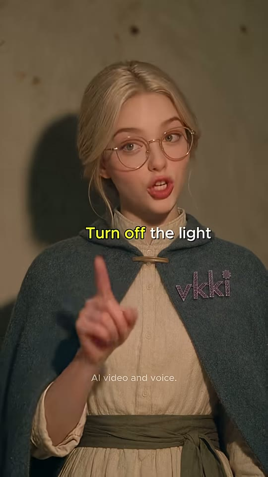

안경 소녀
검지 손
vkki 자수
샷MCU앵글정면 아이레벨(컷6과 동일 셋업)카메라고정구도컷6과 동일 프레이밍. 안경 소녀 정중앙, 오른손 검지를 세워 화면 좌하단→가슴 앞으로(선생님 제스처). vkki 자수 우측 가슴.동작검지를 세우며 '그럼 이렇게 말해—' → 또박또박 정답 → 끝에 눈을 감으며 뿌듯한 미소.대사안경 소녀: "Then say — turn off the light."화면 자막"Then say —" (13.95~14.95) → "Turn off the light" 중 'Turn off' 노랑 (14.95~15.83)들어오는 전환하드컷효과음/음악BGM 음표 강조(자동자막 [music] 14.0초, 추정)역할정답 제시(학습 핵심 문장)
1순위
seedance-2-5원본 모델(추정) — 미세표정·윙크·손짓 자연스러움
2순위
minimax-h3무료·오디오 포함 립싱크
3순위
kling-v3-omni캐릭터 일관성 + 립싱크
① 이미지 프롬프트 (원본 클론)photoreal cinematic live-action still, 9:16 vertical 608x1080, shot on 50mm full-frame, f/2.0 shallow depth of field, warm 2700K oil-lantern key light with soft falloff, cool teal-blue moonlight fill from window, subtle film grain, Korean drama beauty lighting, smooth dewy skin, 19th-century European attic dormitory of rough plaster and mossy stone walls. Frontal medium close-up against a flat grey-beige plaster wall with her shadow on the left: the glasses girl, young European woman with platinum-blonde hair in a low messy bun and loose face-framing strands, round thin gold wire glasses, rosy cheeks, slate-blue wool hooded cape with a brass clasp and the word 'vkki' embroidered in lilac thread on the right chest, cream linen long dress with an olive-green fabric sash belt, looking straight into the lens, right index finger raised in a teacher-like gesture at chest height.
② 영상 프롬프트 (원본 클론)Static camera, 2.0 seconds. She raises her index finger and says clearly and slowly, like a friendly teacher, then closes her eyes with a satisfied little smile. Lip-sync, clear young female voice: "Then say... turn off the light."
③ 동물 버전 이미지 프롬프트photoreal cinematic still of anthropomorphic animal actors, soft realistic fur, expressive large eyes, 9:16 vertical 608x1080, 50mm full-frame f/2.0 shallow depth of field, warm 2700K oil-lantern key light, cool teal-blue moonlight fill, subtle film grain, 19th-century European attic dormitory of rough plaster and mossy stone walls, miniature-scale props matched to animal size. Frontal medium close-up against a plaster wall: Momo, an anthropomorphic cream Ragdoll cat with blue eyes and a fluffy face wearing round thin gold wire glasses, a slate-blue wool hooded cape with a brass clasp and lilac 'vkki' embroidery on the right chest, cream linen dress with an olive-green sash, looking into the lens, one paw raised with a single claw-finger up like a teacher.
④ 동물 버전 영상 프롬프트Static camera, 2.0 seconds. The ragdoll cat raises one paw-finger and says clearly, then closes her eyes with a proud smile, lip-synced: "Then say... turn off the light."
네거티브random text, subtitles, captions, letters on screen, watermark overlay, logo overlay, extra fingers, fused fingers, deformed hands, warped face, asymmetrical eyes, cross-eyed, lip-sync drift, mouth moving without audio, flicker, morphing background, identity change between frames, duplicate characters, cartoon, anime, 3D render look, plastic skin, oversaturated, horizontal 16:9 frame, letterbox, modern objects, electric lamp, light bulb, smartphone, daylight, harsh flash | ANIMAL: human characters, human faces, human hands, realistic human skin, random text, subtitles, captions, letters on screen, watermark overlay, logo overlay, extra fingers, fused fingers, deformed hands, warped face, asymmetrical eyes, cross-eyed, lip-sync drift, mouth moving without audio, flicker, morphing background, identity change between frames, duplicate characters, cartoon, anime, 3D render look, plastic skin, oversaturated, horizontal 16:9 frame, letterbox, modern objects, electric lamp, light bulb, smartphone, daylight, harsh flash, creepy uncanny animal, distorted snout, extra limbs, extra tails, mismatched fur color between shots
컷 9 · 반복 학습 1 (따라 말하기)
15.83s → 17.21s (1.38s)

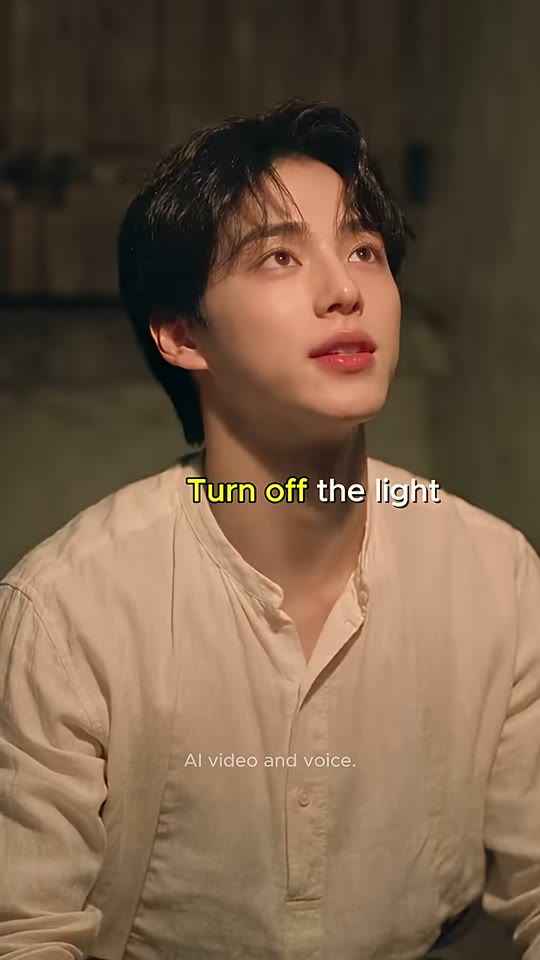
부키
샷MCU앵글살짝 로우앵글(컷7과 동일 셋업)카메라고정구도컷7과 동일. 부키 중앙, 시선 위(랜턴), 배경 닫힌 셔터. 손 없음 — 입 모양이 주인공.동작위를 올려다보며 입을 크게 벌려 정답 문장을 자신 있게 따라 말함.대사부키: "Turn off the light."화면 자막"Turn off the light" 중 'Turn off' 노랑 (15.95~17.21)들어오는 전환하드컷 — 정답 즉시 따라하기효과음/음악BGM 유지역할반복 학습 1 (따라 말하기)
1순위
minimax-h3대사 립싱크+음성 동시 생성, 무료 팀 기본
2순위
seedance-2-5원본 해시태그 #seedance25 — 동일 룩·피부 질감 재현에 가장 가까움(추정)
3순위
kling-v3-omni레퍼런스 이미지 고정력 좋은 립싱크 대안
① 이미지 프롬프트 (원본 클론)photoreal cinematic live-action still, 9:16 vertical 608x1080, shot on 50mm full-frame, f/2.0 shallow depth of field, warm 2700K oil-lantern key light with soft falloff, cool teal-blue moonlight fill from window, subtle film grain, Korean drama beauty lighting, smooth dewy skin, 19th-century European attic dormitory of rough plaster and mossy stone walls. Medium close-up, slightly low angle: Buki, a handsome Korean young man about 19 with tousled dark-brown wavy middle-part hair, fair skin, rosy lips, wearing a wrinkled cream-ivory linen band-collar peasant shirt and dark brown wool trousers, barefoot, looking up at the lantern with hopeful wide eyes, mouth open mid-word, hands out of frame. Background: out-of-focus closed wooden shutters, warm amber.
② 영상 프롬프트 (원본 클론)Static camera, 1.4 seconds. He looks up and says the phrase clearly with a big open mouth, then closes his lips expectantly. Lip-sync, confident young male voice: "Turn off the light."
③ 동물 버전 이미지 프롬프트photoreal cinematic still of anthropomorphic animal actors, soft realistic fur, expressive large eyes, 9:16 vertical 608x1080, 50mm full-frame f/2.0 shallow depth of field, warm 2700K oil-lantern key light, cool teal-blue moonlight fill, subtle film grain, 19th-century European attic dormitory of rough plaster and mossy stone walls, miniature-scale props matched to animal size. Medium close-up, slightly low angle: Hamjji, an anthropomorphic golden Syrian hamster (orange-gold and white fur, round cheeks, tiny pink paws) wearing a wrinkled cream-ivory linen band-collar peasant shirt and dark brown trousers, bare pink feet, looking up with hopeful big eyes, mouth open. Background: out-of-focus closed wooden shutters.
④ 동물 버전 영상 프롬프트Static camera, 1.4 seconds. The hamster looks up and says clearly with a big mouth, lip-synced: "Turn off the light."
네거티브random text, subtitles, captions, letters on screen, watermark overlay, logo overlay, extra fingers, fused fingers, deformed hands, warped face, asymmetrical eyes, cross-eyed, lip-sync drift, mouth moving without audio, flicker, morphing background, identity change between frames, duplicate characters, cartoon, anime, 3D render look, plastic skin, oversaturated, horizontal 16:9 frame, letterbox, modern objects, electric lamp, light bulb, smartphone, daylight, harsh flash | ANIMAL: human characters, human faces, human hands, realistic human skin, random text, subtitles, captions, letters on screen, watermark overlay, logo overlay, extra fingers, fused fingers, deformed hands, warped face, asymmetrical eyes, cross-eyed, lip-sync drift, mouth moving without audio, flicker, morphing background, identity change between frames, duplicate characters, cartoon, anime, 3D render look, plastic skin, oversaturated, horizontal 16:9 frame, letterbox, modern objects, electric lamp, light bulb, smartphone, daylight, harsh flash, creepy uncanny animal, distorted snout, extra limbs, extra tails, mismatched fur color between shots
컷 10 · 시청자 참여 퀴즈 — 빈칸으로 시청자가 직접 말하게 유도(리텐션·댓글 장치)
17.21s → 18.04s (0.83s)

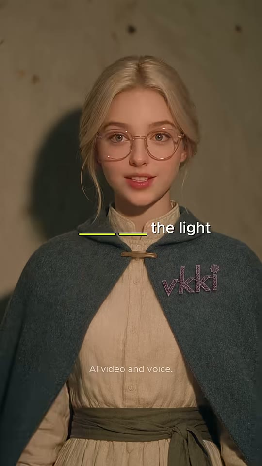
안경 소녀
검지 손
샷MCU앵글정면 아이레벨(컷6/8 셋업)카메라고정구도컷8과 동일. 검지를 세웠다 내리는 중.동작검지를 세운 채 입 모양으로 한 번 더 코칭 → 손 내리며 미소.대사(추정) 안경 소녀: "Turn off — the light." 반복 코칭(자동자막 미검출, 오디오 RMS -18dB로 음성 존재)화면 자막빈칸 퀴즈 "____ ____ the light" — 두 개의 노란 밑줄(빈칸)이 노랑, 'the light' 흰색 (17.21~18.04)들어오는 전환하드컷 — 빠른 핑퐁(0.83초, 영상 최단 컷)효과음/음악없음역할시청자 참여 퀴즈 — 빈칸으로 시청자가 직접 말하게 유도(리텐션·댓글 장치)
1순위
seedance-2-5원본 모델(추정) — 미세표정·윙크·손짓 자연스러움
2순위
minimax-h3무료·오디오 포함 립싱크
3순위
kling-v3-omni캐릭터 일관성 + 립싱크
① 이미지 프롬프트 (원본 클론)photoreal cinematic live-action still, 9:16 vertical 608x1080, shot on 50mm full-frame, f/2.0 shallow depth of field, warm 2700K oil-lantern key light with soft falloff, cool teal-blue moonlight fill from window, subtle film grain, Korean drama beauty lighting, smooth dewy skin, 19th-century European attic dormitory of rough plaster and mossy stone walls. Frontal medium close-up against a plaster wall: the glasses girl, young European woman with platinum-blonde hair in a low messy bun and loose face-framing strands, round thin gold wire glasses, rosy cheeks, slate-blue wool hooded cape with a brass clasp and the word 'vkki' embroidered in lilac thread on the right chest, cream linen long dress with an olive-green fabric sash belt, index finger raised, mouth open mid-word, encouraging expression.
② 영상 프롬프트 (원본 클론)Static camera, 0.8 seconds. She taps the air with her raised index finger and repeats encouragingly, then lowers the hand with a small smile. Lip-sync: "Turn off... the light."
③ 동물 버전 이미지 프롬프트photoreal cinematic still of anthropomorphic animal actors, soft realistic fur, expressive large eyes, 9:16 vertical 608x1080, 50mm full-frame f/2.0 shallow depth of field, warm 2700K oil-lantern key light, cool teal-blue moonlight fill, subtle film grain, 19th-century European attic dormitory of rough plaster and mossy stone walls, miniature-scale props matched to animal size. Frontal medium close-up against a plaster wall: Momo, an anthropomorphic cream Ragdoll cat with blue eyes and a fluffy face wearing round thin gold wire glasses, a slate-blue wool hooded cape with a brass clasp and lilac 'vkki' embroidery on the right chest, cream linen dress with an olive-green sash, one paw-finger raised, mouth open, encouraging.
④ 동물 버전 영상 프롬프트Static camera, 0.8 seconds. The ragdoll cat taps the air with one claw-finger and repeats encouragingly, lip-synced: "Turn off... the light."
네거티브random text, subtitles, captions, letters on screen, watermark overlay, logo overlay, extra fingers, fused fingers, deformed hands, warped face, asymmetrical eyes, cross-eyed, lip-sync drift, mouth moving without audio, flicker, morphing background, identity change between frames, duplicate characters, cartoon, anime, 3D render look, plastic skin, oversaturated, horizontal 16:9 frame, letterbox, modern objects, electric lamp, light bulb, smartphone, daylight, harsh flash | ANIMAL: human characters, human faces, human hands, realistic human skin, random text, subtitles, captions, letters on screen, watermark overlay, logo overlay, extra fingers, fused fingers, deformed hands, warped face, asymmetrical eyes, cross-eyed, lip-sync drift, mouth moving without audio, flicker, morphing background, identity change between frames, duplicate characters, cartoon, anime, 3D render look, plastic skin, oversaturated, horizontal 16:9 frame, letterbox, modern objects, electric lamp, light bulb, smartphone, daylight, harsh flash, creepy uncanny animal, distorted snout, extra limbs, extra tails, mismatched fur color between shots
컷 11 · 반복 학습 2 + 소등 직전 기대감
18.04s → 19.25s (1.21s)
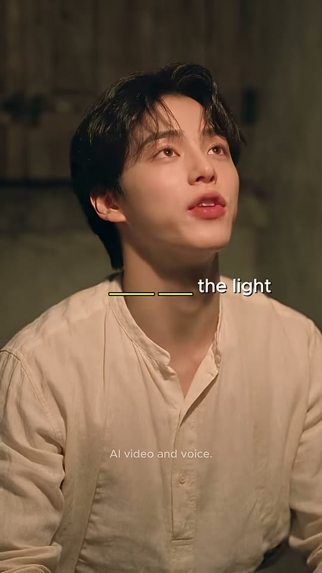

부키
샷MCU앵글살짝 로우앵글(컷7/9 셋업)카메라고정구도컷9와 동일. 부키 중앙, 위를 보며 입 벌림 → 입 다물고 기대하는 눈빛.동작한 번 더 따라 말하고 입을 다문 채 랜턴을 기대하며 올려다봄(다음 컷 소등 대기).대사(추정) 부키: "Turn off the light." 반복(자동자막 미검출)화면 자막빈칸 퀴즈 "____ ____ the light" (18.04~18.95), 마지막 0.3초 자막 없음들어오는 전환하드컷효과음/음악BGM 서스펜스 한 박자(추정)역할반복 학습 2 + 소등 직전 기대감
1순위
minimax-h3대사 립싱크+음성 동시 생성, 무료 팀 기본
2순위
seedance-2-5원본 해시태그 #seedance25 — 동일 룩·피부 질감 재현에 가장 가까움(추정)
3순위
kling-v3-omni레퍼런스 이미지 고정력 좋은 립싱크 대안
① 이미지 프롬프트 (원본 클론)photoreal cinematic live-action still, 9:16 vertical 608x1080, shot on 50mm full-frame, f/2.0 shallow depth of field, warm 2700K oil-lantern key light with soft falloff, cool teal-blue moonlight fill from window, subtle film grain, Korean drama beauty lighting, smooth dewy skin, 19th-century European attic dormitory of rough plaster and mossy stone walls. Medium close-up, slightly low angle: Buki, a handsome Korean young man about 19 with tousled dark-brown wavy middle-part hair, fair skin, rosy lips, wearing a wrinkled cream-ivory linen band-collar peasant shirt and dark brown wool trousers, barefoot, looking up at the lantern, lips just closing, hopeful anticipation. Background: out-of-focus closed wooden shutters.
② 영상 프롬프트 (원본 클론)Static camera, 1.2 seconds. He repeats the phrase once more, then closes his mouth and stares up in hopeful anticipation, holding still. Lip-sync: "Turn off the light."
③ 동물 버전 이미지 프롬프트photoreal cinematic still of anthropomorphic animal actors, soft realistic fur, expressive large eyes, 9:16 vertical 608x1080, 50mm full-frame f/2.0 shallow depth of field, warm 2700K oil-lantern key light, cool teal-blue moonlight fill, subtle film grain, 19th-century European attic dormitory of rough plaster and mossy stone walls, miniature-scale props matched to animal size. Medium close-up, slightly low angle: Hamjji, an anthropomorphic golden Syrian hamster (orange-gold and white fur, round cheeks, tiny pink paws) wearing a wrinkled cream-ivory linen band-collar peasant shirt and dark brown trousers, bare pink feet, looking up in hopeful anticipation, whiskers trembling.
④ 동물 버전 영상 프롬프트Static camera, 1.2 seconds. The hamster repeats the phrase, then freezes staring up, ears perked, lip-synced: "Turn off the light."
네거티브random text, subtitles, captions, letters on screen, watermark overlay, logo overlay, extra fingers, fused fingers, deformed hands, warped face, asymmetrical eyes, cross-eyed, lip-sync drift, mouth moving without audio, flicker, morphing background, identity change between frames, duplicate characters, cartoon, anime, 3D render look, plastic skin, oversaturated, horizontal 16:9 frame, letterbox, modern objects, electric lamp, light bulb, smartphone, daylight, harsh flash | ANIMAL: human characters, human faces, human hands, realistic human skin, random text, subtitles, captions, letters on screen, watermark overlay, logo overlay, extra fingers, fused fingers, deformed hands, warped face, asymmetrical eyes, cross-eyed, lip-sync drift, mouth moving without audio, flicker, morphing background, identity change between frames, duplicate characters, cartoon, anime, 3D render look, plastic skin, oversaturated, horizontal 16:9 frame, letterbox, modern objects, electric lamp, light bulb, smartphone, daylight, harsh flash, creepy uncanny animal, distorted snout, extra limbs, extra tails, mismatched fur color between shots
컷 12 · 페이오프(정답 → 소등 보상) + 반전 펀치라인(틀린 걸 알려준 누나가 공을 가로챔) → 루프
19.25s → 23.01s (3.76s)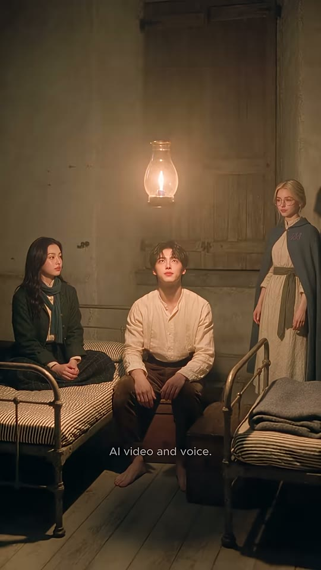
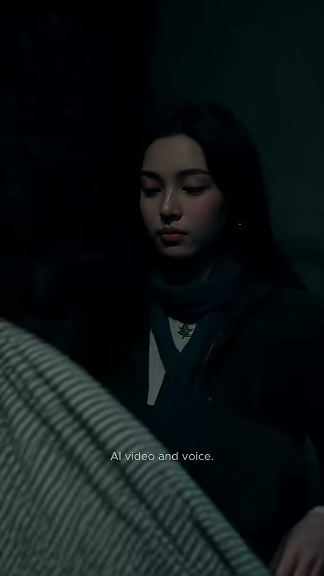
랜턴
누나(①)
부키(①)
안경 소녀(①)
누나 CU(②)
이불 전경(②)
샷WS → CU (컷 내부 2셋업)앵글① 정면 아이레벨 와이드 ② 누나 CU 살짝 하이앵글카메라고정 / 고정구도① 19.25~20.96 정면 와이드: 셔터 닫힌 방, 랜턴 중앙 상단(x44~50%, y15~30%), 누나 좌, 부키 중앙, 안경 소녀 우 — 셋 다 랜턴을 올려다봄. ② 20.96(숨은 하드컷, 어두워서 컷 검출 누락)~23.01: 어둠 속 누나 CU(얼굴 x35~65%, y20~40%), 하단 45%는 회백색 줄무늬 이불 전경이 올라옴.동작① 정답을 말하자 랜턴 불꽃이 약 0.3초에 걸쳐 꺼지고(19.8초) 가는 연기가 피어오르며 방이 차가운 청록 어둠으로 전환. ② 누나가 어둠 속에서 줄무늬 이불을 끌어올려 덮으며 눈을 내리깔고 시치미 떼듯 '그게 내 말이었어'.대사누나: "...That's what I meant." (21.9초~)화면 자막① 자막 없음 ② "...That's what I meant" 하이라이트 없음, 흰색 (21.90~23.01), 세로 50%들어오는 전환하드컷 → 컷 내부 숨은 하드컷(20.96)효과음/음악랜턴 '훅' 꺼지는 소리 + 정적(20~21.5초 RMS -27~-31dB) → 이불 부스럭 + 마지막 대사. 페이드아웃 없이 하드 엔드역할페이오프(정답 → 소등 보상) + 반전 펀치라인(틀린 걸 알려준 누나가 공을 가로챔) → 루프
1순위
seedance-2-5원본 모델(추정) — 3인 와이드 동선·조명 유지
2순위
veo-3-1와이드 환경·조명 변화(랜턴 소등) 표현 강함
3순위
kling-v3고정 카메라 다인물 안정성
① 이미지 프롬프트 (원본 클론)photoreal cinematic live-action still, 9:16 vertical 608x1080, shot on 50mm full-frame, f/2.0 shallow depth of field, warm 2700K oil-lantern key light with soft falloff, cool teal-blue moonlight fill from window, subtle film grain, Korean drama beauty lighting, smooth dewy skin, 19th-century European attic dormitory of rough plaster and mossy stone walls. Frontal wide shot of the same attic dormitory now with shutters closed: hanging brass hurricane lantern in upper center glowing, Noona, his older sister, early-20s East Asian woman with long wavy black center-part hair, small gold hoop earrings, forest-green wool coat with brass buttons, chunky teal-blue knit scarf, cream high-neck blouse with a small brooch on the left bed, Buki, a handsome Korean young man about 19 with tousled dark-brown wavy middle-part hair, fair skin, rosy lips, wearing a wrinkled cream-ivory linen band-collar peasant shirt and dark brown wool trousers, barefoot sitting on the middle bed, the glasses girl, young European woman with platinum-blonde hair in a low messy bun and loose face-framing strands, round thin gold wire glasses, rosy cheeks, slate-blue wool hooded cape with a brass clasp and the word 'vkki' embroidered in lilac thread on the right chest, cream linen long dress with an olive-green fabric sash belt standing on the right, all three looking up at the lantern. Iron beds with striped ticking, pale plank floor.
② 영상 프롬프트 (원본 클론)Two generated clips. Clip A (1.7 s, static): the lantern flame shrinks and goes out over 0.3 seconds, a thin wisp of white smoke rises, the room drops into cold teal-blue darkness, the three stay still looking up. Soft 'fwoop' extinguish sound then silence. Clip B (2.05 s, static, dark teal night lighting): close-up of the sister in bed, pulling a grey-white striped blanket up from the foreground, eyes lowered, and murmuring smugly. Lip-sync, soft young female voice: "...That's what I meant."
③ 동물 버전 이미지 프롬프트photoreal cinematic still of anthropomorphic animal actors, soft realistic fur, expressive large eyes, 9:16 vertical 608x1080, 50mm full-frame f/2.0 shallow depth of field, warm 2700K oil-lantern key light, cool teal-blue moonlight fill, subtle film grain, 19th-century European attic dormitory of rough plaster and mossy stone walls, miniature-scale props matched to animal size. Frontal wide shot, shutters closed: brass lantern in upper center glowing, Nabi-noona, an anthropomorphic long-haired black cat with amber eyes and small gold hoop earrings, wearing a forest-green wool coat with brass buttons and a chunky teal-blue knit scarf on the left bed, Hamjji, an anthropomorphic golden Syrian hamster (orange-gold and white fur, round cheeks, tiny pink paws) wearing a wrinkled cream-ivory linen band-collar peasant shirt and dark brown trousers, bare pink feet on the middle bed, Momo, an anthropomorphic cream Ragdoll cat with blue eyes and a fluffy face wearing round thin gold wire glasses, a slate-blue wool hooded cape with a brass clasp and lilac 'vkki' embroidery on the right chest, cream linen dress with an olive-green sash standing on the right, all looking up.
④ 동물 버전 영상 프롬프트Clip A (1.7 s): the lantern goes out, smoke wisp rises, room turns cold teal-blue dark, three animals' eyes glint in the dark. Clip B (2.05 s): close-up of the black cat in bed pulling a grey-white striped blanket up with her paw, eyes half-closed, smug, lip-synced soft voice: "...That's what I meant."
네거티브random text, subtitles, captions, letters on screen, watermark overlay, logo overlay, extra fingers, fused fingers, deformed hands, warped face, asymmetrical eyes, cross-eyed, lip-sync drift, mouth moving without audio, flicker, morphing background, identity change between frames, duplicate characters, cartoon, anime, 3D render look, plastic skin, oversaturated, horizontal 16:9 frame, letterbox, modern objects, electric lamp, light bulb, smartphone, daylight, harsh flash | ANIMAL: human characters, human faces, human hands, realistic human skin, random text, subtitles, captions, letters on screen, watermark overlay, logo overlay, extra fingers, fused fingers, deformed hands, warped face, asymmetrical eyes, cross-eyed, lip-sync drift, mouth moving without audio, flicker, morphing background, identity change between frames, duplicate characters, cartoon, anime, 3D render look, plastic skin, oversaturated, horizontal 16:9 frame, letterbox, modern objects, electric lamp, light bulb, smartphone, daylight, harsh flash, creepy uncanny animal, distorted snout, extra limbs, extra tails, mismatched fur color between shots
✂️ 편집 키트
타임라인0.00 와이드(무언 훅·손 뻗기) → 2.83 부키 MCU 질문 → 5.38 누나 MCU 오답 → 6.96 부키 로우앵글 'Close the light!' → 8.17 와이드(안경 소녀 셔터 닫음) → 9.96 안경 소녀 'The window is closed now' → 12.21 부키 'I want it dark' → 13.88 안경 소녀 정답 → 15.83 부키 따라하기 → 17.21 안경 소녀 빈칸 퀴즈 → 18.04 부키 빈칸 퀴즈 → 19.25 와이드 랜턴 소등 → 20.96(숨은 컷) 누나 CU 'That's what I meant' → 23.01 하드 엔드
FFmpeg 명령# === 준비: shots/s01.mp4~s11.mp4, s12a.mp4(소등 와이드), s12b.mp4(누나 CU) / bgm.mp3 / subs.ass / fonts/Montserrat-SemiBold.ttf ===
# (Windows: Git Bash에서 실행. 창 안 뜸. PowerShell이면 줄끝 \ 대신 한 줄로)
mkdir -p trim
# 1) 컷별 실측 길이로 자르기 + 규격 통일(608x1080, 24fps, 44.1kHz 스테레오)
for pair in s01:2.833 s02:2.542 s03:1.583 s04:1.209 s05:1.791 s06:2.250 s07:1.667 s08:1.958 s09:1.375 s10:0.834 s11:1.208 s12a:1.710 s12b:2.051; do
n=${pair%%:*}; d=${pair##*:}
ffmpeg -y -nostdin -i shots/$n.mp4 -t $d -vf "scale=608:1080:force_original_aspect_ratio=increase,crop=608:1080,fps=24,setsar=1,format=yuv420p" -af "aresample=44100,aformat=channel_layouts=stereo,apad" -t $d -c:v libx264 -crf 16 -preset slow -c:a aac -b:a 192k trim/$n.mp4
done
# 1-b) (선택) 생성 영상에서 랜턴이 안 꺼졌을 때: s12a 0.55초부터 0.3초간 어둡게+청록 톤으로 강제 소등
ffmpeg -y -nostdin -i trim/s12a.mp4 -vf "eq=brightness='-0.28*min(max((t-0.55)/0.3,0),1)':saturation='1-0.45*min(max((t-0.55)/0.3,0),1)':eval=frame,colorbalance=bs=0.12:ms=0.06:rs=-0.08" -c:v libx264 -crf 16 -c:a copy trim/s12a_dark.mp4 && mv trim/s12a_dark.mp4 trim/s12a.mp4
# 2) 이어붙이기(하드컷만, 전환 효과 없음)
printf "file '%s'\n" s01.mp4 s02.mp4 s03.mp4 s04.mp4 s05.mp4 s06.mp4 s07.mp4 s08.mp4 s09.mp4 s10.mp4 s11.mp4 s12a.mp4 s12b.mp4 > trim/list.txt
ffmpeg -y -nostdin -f concat -safe 0 -i trim/list.txt -c copy joined.mp4
# 3) 자막 burn-in + BGM 덕킹 + 라우드니스(-14 LUFS 업로드용. 원본과 똑같이 하려면 I=-17.8)
ffmpeg -y -nostdin -i joined.mp4 -stream_loop -1 -i bgm.mp3 -filter_complex "[0:v]subtitles=subs.ass:fontsdir=fonts[v];[0:a]asplit=2[dlg][key];[1:a]atrim=0:23.011,asetpts=PTS-STARTPTS,volume=0.30,afade=t=out:st=19.6:d=0.4[bgm];[bgm][key]sidechaincompress=threshold=0.02:ratio=10:attack=15:release=350:makeup=1[duck];[dlg][duck]amix=inputs=2:duration=first:normalize=0,loudnorm=I=-14:TP=-1.5:LRA=9[a]" -map "[v]" -map "[a]" -t 23.011 -r 24 -c:v libx264 -crf 17 -preset slow -pix_fmt yuv420p -c:a aac -b:a 192k -movflags +faststart final_vk_pwKjXyHW2cU.mp4
# 4) 검증
ffprobe -v error -show_entries format=duration:stream=width,height,r_frame_rate -of compact final_vk_pwKjXyHW2cU.mp4
ffmpeg -nostdin -i final_vk_pwKjXyHW2cU.mp4 -af ebur128 -f null - 2>&1 | tail -12
ASS 자막 스타일[Script Info]
ScriptType: v4.00+
PlayResX: 608
PlayResY: 1080
WrapStyle: 2
ScaledBorderAndShadow: yes
[V4+ Styles]
Format: Name, Fontname, Fontsize, PrimaryColour, SecondaryColour, OutlineColour, BackColour, Bold, Italic, Underline, StrikeOut, ScaleX, ScaleY, Spacing, Angle, BorderStyle, Outline, Shadow, Alignment, MarginL, MarginR, MarginV, Encoding
Style: Cap,Montserrat SemiBold,36,&H00FFFFFF,&H00FFFFFF,&H00101010,&H80000000,0,0,0,0,100,100,0,0,1,1.2,1.5,5,20,20,0,1
Style: Disc,Montserrat,14,&H4DFFFFFF,&H4DFFFFFF,&H00000000,&H00000000,0,0,0,0,100,100,0,0,1,0,0,5,0,0,0,1
[Events]
Format: Layer, Start, End, Style, Name, MarginL, MarginR, MarginV, Effect, Text
Dialogue: 0,0:00:00.00,0:00:23.01,Disc,,0,0,0,,{\pos(304,853)}AI video and voice.
Dialogue: 1,0:00:02.90,0:00:03.40,Cap,Buki,0,0,0,,{\pos(304,535)}Noona —
Dialogue: 1,0:00:03.40,0:00:04.40,Cap,Buki,0,0,0,,{\pos(304,555)}light... {\c&H48F8F8&}off?
Dialogue: 1,0:00:04.40,0:00:05.37,Cap,Buki,0,0,0,,{\pos(304,535)}... what do I say?
Dialogue: 1,0:00:05.40,0:00:05.90,Cap,Noona,0,0,0,,{\pos(304,475)}Hmm...
Dialogue: 1,0:00:05.90,0:00:06.95,Cap,Noona,0,0,0,,{\pos(304,522)}{\c&H48F8F8&}Close{\c&HFFFFFF&} the light?
Dialogue: 1,0:00:07.20,0:00:08.16,Cap,Buki,0,0,0,,{\pos(304,535)}{\c&H48F8F8&}Close{\c&HFFFFFF&} the light!
Dialogue: 1,0:00:10.00,0:00:10.95,Cap,Glasses,0,0,0,,{\pos(304,516)}{\c&H48F8F8&}Close?
Dialogue: 1,0:00:10.95,0:00:12.35,Cap,Glasses,0,0,0,,{\pos(304,516)}The window is {\c&H48F8F8&}closed{\c&HFFFFFF&} now
Dialogue: 1,0:00:12.35,0:00:12.90,Cap,Buki,0,0,0,,{\pos(304,520)}No, no —
Dialogue: 1,0:00:12.90,0:00:13.87,Cap,Buki,0,0,0,,{\pos(304,535)}I want {\c&H48F8F8&}it dark
Dialogue: 1,0:00:13.95,0:00:14.95,Cap,Glasses,0,0,0,,{\pos(304,525)}Then say —
Dialogue: 1,0:00:14.95,0:00:15.83,Cap,Glasses,0,0,0,,{\pos(304,525)}{\c&H48F8F8&}Turn off{\c&HFFFFFF&} the light
Dialogue: 1,0:00:15.95,0:00:17.20,Cap,Buki,0,0,0,,{\pos(304,548)}{\c&H48F8F8&}Turn off{\c&HFFFFFF&} the light
Dialogue: 1,0:00:17.21,0:00:18.04,Cap,Glasses,0,0,0,,{\pos(304,525)}{\c&H48F8F8&}____ ____{\c&HFFFFFF&} the light
Dialogue: 1,0:00:18.04,0:00:18.95,Cap,Buki,0,0,0,,{\pos(304,548)}{\c&H48F8F8&}____ ____{\c&HFFFFFF&} the light
Dialogue: 1,0:00:21.90,0:00:23.01,Cap,Noona,0,0,0,,{\pos(304,537)}...That's what I meant
HyperFrames 편집 프롬프트 (Claude에 그대로 붙여넣기)HyperFrames로 9:16(608x1080, 24fps) 23.011초 쇼츠를 편집해줘. 입력: shots/s01~s11.mp4, s12a.mp4, s12b.mp4, bgm.mp3. 전환은 전부 하드컷(xfade·페이드 금지). 컷 타이밍(ms): s01 0~2833 / s02 2833~5375 / s03 5375~6958 / s04 6958~8167 / s05 8167~9958 / s06 9958~12208 / s07 12208~13875 / s08 13875~15833 / s09 15833~17208 / s10 17208~18042 / s11 18042~19250 / s12a 19250~20960 / s12b 20960~23011. 자막: Montserrat SemiBold 36px 흰색, 얇은 검정 외곽선 1.2px + 그림자 50%, 가로 중앙, 세로 top 48~51%(인물 턱 높이), 애니메이션 없이 즉시 표시/즉시 사라짐. 키워드만 노랑 #F8F848. 자막 이벤트(ms): 2900~3400 'Noona —' / 3400~4400 'light... off?'(off? 노랑) / 4400~5375 '... what do I say?' / 5400~5900 'Hmm...' / 5900~6958 'Close the light?'(Close 노랑) / 7200~8167 'Close the light!'(Close 노랑) / 10000~10950 'Close?'(전체 노랑) / 10950~12350 'The window is closed now'(closed 노랑, 다음 컷으로 150ms 넘어감) / 12350~12900 'No, no —' / 12900~13875 'I want it dark'(it dark 노랑) / 13950~14950 'Then say —' / 14950~15833 'Turn off the light'(Turn off 노랑) / 15950~17208 같은 문장 / 17208~18042 '____ ____ the light'(밑줄 두 개 노랑) / 18042~18950 같은 빈칸 / 21900~23011 '...That's what I meant'(하이라이트 없음). 상시 레이어: 'AI video and voice.' 14px 흰색 불투명도 70%, 가로 중앙, 세로 79%. 오디오: 클립 원음(대사) 유지, BGM 볼륨 30%를 대사에 사이드체인 덕킹(attack 15ms, release 350ms), 19600ms부터 400ms 동안 BGM 페이드아웃해 소등 후 정적 확보, 전체 -14 LUFS / TP -1.5. s12a에서 랜턴이 안 꺼지면 550ms~850ms 구간 밝기 -28%·채도 -45%·청록 틴트 키프레임을 넣어 소등 연출. 엔딩 페이드 없이 23011ms에서 하드 컷 종료.
✅ 똑같이 만들기 체크리스트
- 컷 길이 13셋업(측정 12컷 + 20.96초 숨은 컷)을 ms 단위로 그대로 — 특히 0.83초(s10)·1.21초(s11) 핑퐁 속도 유지
- 인물 3명의 의상 색(크림 리넨/포레스트 그린+청록 목도리/슬레이트 블루 망토)과 망토의 라일락 'vkki' 자수를 모든 컷에서 고정 — 레퍼런스 이미지 image2image 필수
- 조명 서사: 창 열림(청록 필) → 셔터 닫힘(앰버 단색) → 소등(청록 다크). 컷4는 창 쪽 배경(차가운 톤), 컷7·9·11은 닫힌 셔터 배경(따뜻한 톤)으로 연속성 맞추기
- 자막은 세로 48~51% 중앙 한 줄, 키워드만 노랑 #F8F848, 빈칸 '____ ____'도 노랑. 애니메이션 없는 팝 표시
- 'AI video and voice.' 고지 문구를 세로 79% 중앙에 전 구간 표시
- 대사는 컷 시작 후 0.1~0.3초에 시작(스피커 온 컷), 첫 2.8초는 대사 없이 행동으로 훅
- 오답 'close'는 반드시 창문 셔터를 닫는 행동으로 시각화(개그의 핵심)
- 엔딩은 소등→누나 CU→하드 엔드, 페이드아웃 넣지 말 것(루프 효과)
- OTS 컷(s02, s03)은 전경에 상대 인물 머리/손을 흐리게 걸어 대화 공간감 유지
🐹 동물 버전 기획주인공 부키 → 황금 햄스터 '햄찌'(같은 크림 리넨 셔츠·갈색 바지·맨발), 누나 → 긴 털 검은 고양이 '나비 누나'(포레스트 그린 코트·청록 목도리·금색 후프), 안경 소녀 → 크림색 랙돌 고양이 '모모'(둥근 금테 안경·슬레이트 블루 망토·라일락 'vkki' 자수 유지). 세트(다락 기숙방·랜턴·연철 침대)는 동물 스케일에 맞춰 소품 크기만 조정하고 구도·렌즈·조명 서사·컷 타이밍·자막 스타일·대사는 100% 동일하게 유지. 바꾸는 것: 캐릭터 외형, 손 제스처를 앞발 제스처로(검지→앞발 발톱 하나), 윙크는 파란 눈 윙크, 햄찌의 볼 부풀리기·수염 떨림 같은 동물 리액션 추가. 보이스는 사람 버전 3개 톤을 그대로 쓰되 햄찌는 피치 +2반음. 먼저 3마리 캐릭터 시트를 만든 뒤 모든 컷을 레퍼런스 image2image로 생성해 털색·의상 일관성 확보.
전체 프레임 시트 보기 (타임코드 포함)
전체 흐름

전체 흐름
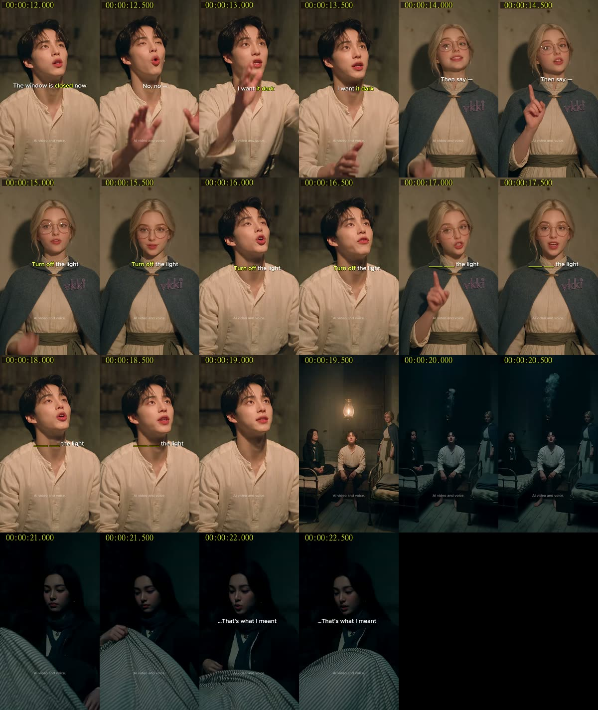